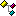

Вкладка состоит из двух панелей: в левой части отображается дерево
загруженных скриптов и плагинов, в правой - дополнительная информация
о выбраном элементе дерева.
В текущей версии дерево имеет следующую структуру:
-
 Скрипты
В данном разделе отображаются все загруженные скрипты. Каждый скрипт представлен одним
элементом раздела. Для каждого скрипта также выводятся все его макросы, которые можно запустить двойным
щелчком мыши, либо нажатием ENTER
-
Плагины
В этом разделе отображаются загруженные плагины. Состав подэлементов плагина и
выводящейся в правой панели информации о нем зависят от типа плагина
и его возможностей.
Для плагинов, не имеющих визуального интерфейса, а также для
визуальных плагинов, открываемых в отдельной странице, в правой
части отображается информация о версии dll-файла плагина. Иначе в
правой части отображается визуальный интерфейс плагина.
Для плагинов, не запретивших отображение макросов, выводится их список.
|